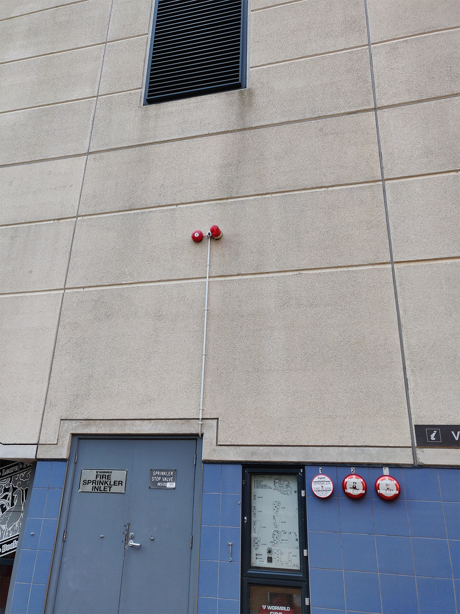

project one
S E C U R I T Y C A M E R A
This is a security camera which is monitored by CCTV and the people who own/control it. Depending on where it is located, it can either be owned by private citizens which are commonly located in their own homes and public security.
Depending on the ownership of the camera it could be connected through very simply or complex. With public ones it probably goes through multiple lines to transfer live time footage of something, while privatly it's quite easy to hook up.
T R A F F I C L I G H T
Traffic lights are either controlled by monitors or by computers to allow them to be coordinated in real time to deal with with traffic patterns. Traffic signals are usually mounted inside a cabinent which connects to each other. They are communicated by the travel of real time.
F I R E A L A R M
Fire alarms are basically located everywhere. As seen in the image on the right, in New Zealand, it is communicated straight to the closet Fire Station when broken. It is responded by Fire Engines coming to the area where it was broken. One broken, alarms go off in a loud noise and citizens are being proceded to be evacuated. But the lines all connect together to respond to a situation like this.
S A T E L L I T E D I S H
The satellite dish receiver is a form of communication which translates from the signal to the TV. TV companies such as Freeview, Sky, and such use this to deliver their services to individuals or families. This is somewhat a wireless method of communicating data.
D I G I T A L B U S S T O P T I M E T A B L E
The digital time table is a real time timetable which records whenever bus' arrive or cancel. It gives time estimation of the next bus will be, or it will show if it's canceled. Bus' check in into that area and then their location will be moved on to the next.
T E L E C O M
Telecom, now known as Spark, has their own supply of power which leads to their company. This is commonly seen everywhere on the street. But it seems like they have updated their brand company name on the power.
disclaimer: the graphics were all made by me